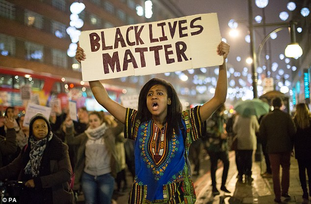

Danesha Lewis For President
Art and Design Campaign
Vote For Me! Danesha For President
We The People.
Preamble: We the People of the United States, in Order to form a more perfect Union, establish Justice, insure domestic Tranquility, provide for the common defence, promote the general Welfare, and secure the Blessings of Liberty to ourselves and our Posterity, do ordain and establish this Constitution for the United States of America.
Black Lives Matter

This automatic page generator is the easiest way to create beautiful pages for all of your projects. Author your page content here using GitHub Flavored Markdown, select a template crafted by a designer, and publish. After your page is generated, you can check out the new gh-pages branch locally. If you’re using GitHub Desktop, simply sync your repository and you’ll see the new branch.
Education
Education is important to the United States. I believe that Education should be free especially for college.
Obama Out
Democracy
a democracy is a system of government by the whole population or all the eligible members of a state, typically through elected representatives.
Protest Black Lives Matter
You can @mention a GitHub username to generate a link to their profile. The resulting <a> element will link to the contributor’s GitHub Profile. For example: In 2007, Chris Wanstrath (@defunkt), PJ Hyett (@pjhyett), and Tom Preston-Werner (@mojombo) founded GitHub.
Vote For Me!
Simple Vote For Me!